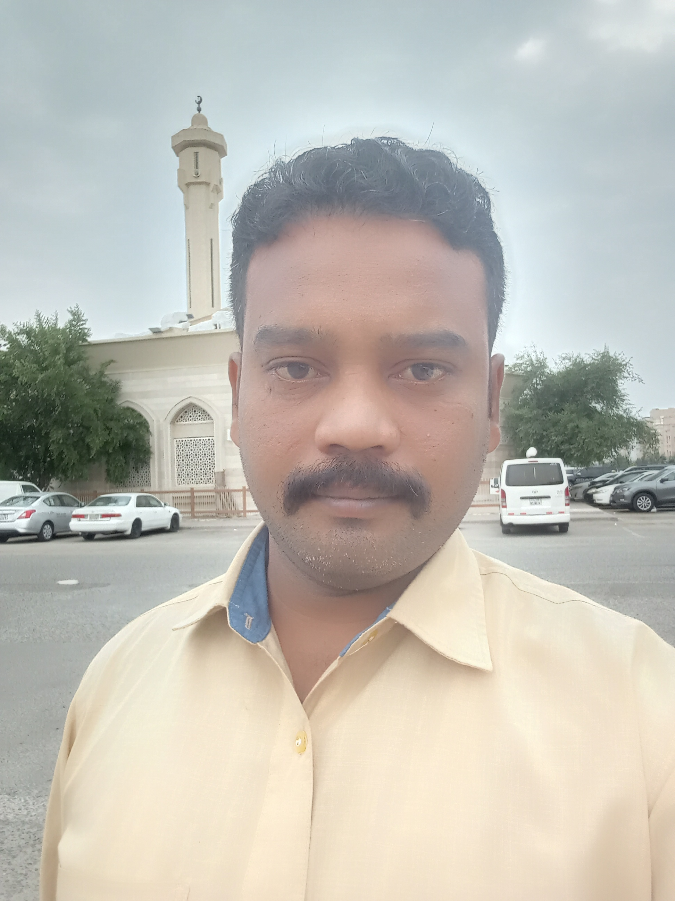

About Me
I am Sikkandhar Alavudin, an experienced general worker skilled in tailoring shop operations, auto driving, flour mill machinery, and mechanical assistance. I have strong hands-on experience in maintenance, electrical work, lubrication, machine operation, and customer service.
⬇ Download ResumeCertificates
Swipe to view certificates:


Experience
- 2025 – Present: TAJ & NAJEEM Uniform Tailor Shop – General Worker (Buttons, Overlock, Electrical, Cleaning, Accounts, Material arrangement)
- 2022 – 2024: OLA / Uber / Rapido – Auto Driver (Passenger safety, customer service)
- 2010 – 2022: Lal Flour Mill – Mechanic & Machine Operator (Rice/Wheat/Chilli grinding machines, lubrication, noise control, accounts)
- 2008 – 2010: Bavani Automobiles – Mechanic Helper (Brake, wheels, oil change, filters, tools, spare delivery, cleaning)
- 2007 – 2008: Solamalai Maruthi Automobiles – Mechanic Helper
- 2006: Solamalai Maruthi Automobiles – Field Training
Education
- Diploma in Four Wheeler Mechanism – Tamil Nadu Open University (2005–2006)
- Life Adjustment Skills & Automobile Maintenance – Madurai Community College
Contact Information
WhatsApp: +91 7092297985
Kuwait Mobile: +965 51026101
Address (India): Madurai, Tamil Nadu
Address (Kuwait): Mangaf Block 4